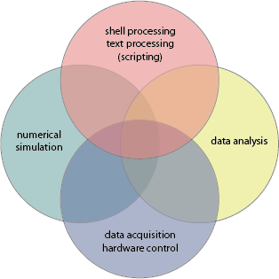

Programming for scientific applications
MS Excel, LibreOffice Calc, and similar spreadsheet software are extremely useful for a wide range of tasks. However, as the required analysis becomes increasingly complex, there are several benefits to doing things programmatically. These advantages include scalability and reproducibility (though these advantages are not guaranteed). Your decisions are recorded your program (often lost in copy-paste processes used in spreadsheets), and provenance is maintained between original data set and results. And as programs are often simply text files, they are more amenable to archivable (along with the original data set) than computations saved in a spreadsheet.
Table of Contents
Applications

Non-exhaustive list of common tasks in science and engineering:
- shell scripting/text processing
- numerical simulation: solving diff eqs, optimization, random sampling
- data analysis: graphics, statistical analysis (hypothesis testing)
- hardware integration (data acquisition and hardware control)
Peripheral tasks:
- web programming
- networking
- UI (user-interface) development (web platform)
To paraphrase/summarize the works of Paul Graham, not all languages are the same. Otherwise, we would program everything in assembly language and programming languages would not have proliferated as it has. There is no single language which is the best at everything. Simulation requires a low-level language; a data analysis language requires high-level language with graphing and statistical analysis capabilities.
Tradeoffs:
- high-level: save user time. choose based on
- language expressiveness (natural data models)
- existing libraries
- low-level: save computational time
The scripting/data analysis options are more numerous than for simulation (where Fortran or C are the most common choices); my recommended strategy is to learn one go-to language; learn bits of other languages as necessary (to use their toolboxes or modify written by others in the community). Interop modules or common exchange formats can be used to pass data/functions back and forth between languages and software programs as necessary.
There is often a tradeoff between succinctness/conciseness vs readability. Conciseness: quicker to write + less places for bugs, possibly easier to see overall structure of the code in a glance; readability: easier to maintain. This are some metrics for conciseness on the Wolfram Alpha Blog (which touts the merits of Mathematica).
To some extent, you will be most productive in the language you already know. However, while you can do a lot of things in every language, it may become prohibitively difficult to do more complicated tasks in particular languages not suited for the task.
The following section lists a few categorizations which may determine how you structure your programs, or indicate the tradeoffs among convenience, robustness, and scalability.
Categorization of languages
I will try to add examples in the future.
Paradigms:
- procedural
- object-oriented
- functional
- logic
Multi-paradigm languages are useful in that scientific applications require many tasks for which different paradigms are better suited (e.g., procedural for I/O, functional for computation, and object-oriented for UI or hardware integration).
Imperative vs declarative
- how to compute vs. what to compute
Static vs dynamic
- variable types are declared and remain invariant
Strongly vs weakly typed
- strict adherence to defined data type
General purpose languages vs domain-specific languages (DSLs)
- DSLs often shorter because programs are constructed within the context of a particular application domain (e.g., namespaces are often implicit in DSLs). Also, DSLs often use the idiom of the domain (indexing, lexicon), making it easier to translate algorithms into code. However, optimal application of DSLs are mostly specific to their domain, as implied by the name.
Zero-indexing vs one-indexing
- depending on the domain of mathematics you are trying to translate into code, one convention may be more straightforward than the other
Prototyping vs production
Graphics
Purposes:
- exploratory/diagnostic. requirements: rapid, programmatic, high-level
- publication: fine control
The same tool may not be the most convenient for both tasks.
Languages
There are of course many other acceptable languages, but some that I can recommend for tasks based on personal experience include the following:
Scripting and/or data analysis:
- Python with NumPy, SciPy, Matplotlib, and Pandas
- R
- Matlab
- IDL
- Igor Pro
Simulation:
- Fortran
- C/C++
Hardware integration:
- Labview